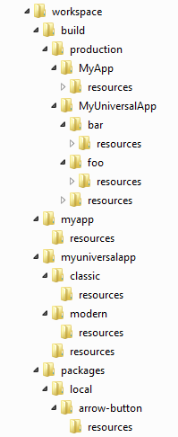
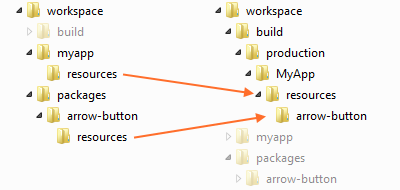
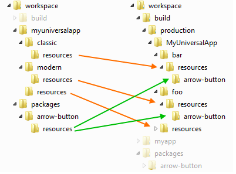
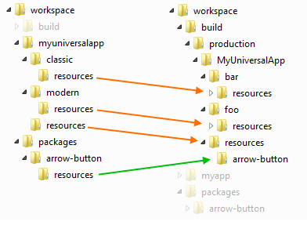

介绍
Web 应用程序通常包含图像和其他非代码文件 (比如视频短片, 数据文件, 等等.) 还有 JavaScript, HTML 和 CSS 内容. Sencha Cmd 将它们归类为 “resources” ，并提供了一些选项来管理它们. 理解这些选项的最好途径就是先以简单使用情景开始慢慢深入.
安装
首先, 我们创建一个 workspace，用来包含所有的应用程序和包(packages)(下面我们会说到). 请先执行下面的cmd命令:
sencha -sdk /path/to/extjs6 generate workspace ./workspace
cd workspace
sencha generate app --ext --classic MyApp ./myapp
sencha generate app --ext UniversalApp ./myuniversalapp
sencha generate package arrow-button下图是 workspace 的文件结构:

Workspaces 并不是此指南必须的. 不过, 当处理多应用程序和/或包(packages)的时候, 推荐使用workspace, 这样可以共享框架, 也方便 build. 更多关于 workspace 的内容, 请查看workspace 指南.
注意: 若在应用程序根目录下创建包(package), 默认会自动给应用程序添加对此包的依赖. 如果你要手动添加包依赖, 只要在app.json's中的 requires 块中添加下面代码:
"requires": [
"font-awesome",
"arrow-button"
],应用程序资源文件(Resources)
以“myapp” 文件夹下的 classic 工具包的应用程序为例. 单工具包(single-toolkit)应用程序的标准文件目录结构如下:
app/
view/
...
resources/ # home for app resources
sass/
app.jsonapp.json
"app.json", 应用程序描述文件, 包含了很多配置项. “resources” 这个数组描述了应用程序资源文件的位置:
"resources" [{
"path": "resources",
"output": "shared"
...
}]单工具包(single-toolkit)应用程序，比如当前这个应用程序, 只有第一项 path (如上图所示) 才真正是资源文件的文件夹. 其它项 (以及“output” 属性) 则会被忽略, 不过在通用应用程序(universal applications)中会有作用(请往下看).
"app.json" 中的顶层“output” 对象指定了构建(build) 应用程序的输出目录. 输出目录由 output 的 base 指定:
"output": {
"base": "${workspace.build.dir}/${build.environment}/${app.name}",
...
},output 的 base 目录是存放 build 后生成的文件的根目录. 上面的例子中, output 的 base 目录是一个表达式，用到了一些配置变量, 这些变量在 Sencha Cmd 加载"app.json" 文件的时候可以被解析. 此处, 这个表达式的最终结果是:
./workspace/build/production/MyApp默认情况, 资源文件会被拷贝到 base 目录的“resources” 子目录下. 这样做的目的，是使开发状态下资源文件的相对路径 和 build 后的资源文件的相对路径 一致.
主题
应用程序需要的资源文件有很多是由主题提供的. 你可以在"app.json" 文件中指定主题:
"theme": "theme-triton",主题通常继承自其他主题, 这样，资源文件可以被继承，也可以被覆写(override). Triton 的基类主题是 Neptune, 所以这两个主题的资源文件都会拷贝到应用程序的“resources” 目录下.
为了说明这个过程, 我们来看看某个特定的图片资源是如何传递的:
theme-neptune/
resources/
images/
loadmask/
loading.gif现在, 像这样 build 你的应用程序:
sencha app build --production"loading.gif" 从 Neptune 的“resources” 文件夹拷贝到了应用程序的 build 输出目录. 输出目录最终如下:
build/
production/
MyApp/
index.html # the output page
resources/
images/
loadmask/
loading.gif # from theme-neptune可以看到, build 输出目录里面现在包含了一个图片，此图片来自主题.
资源组成
上面的例子中, "images/loadmask/loading.gif" 资源来自主题 Triton. 如果应用程序在自身的“resources”文件夹的相应子路径下创建了一个 GIF 图片, 这个 GIF 会覆盖掉来自主题内的相应文件.
你可以使用下面的 loading gif 图片，试试结果:

要覆盖主题提供的资源文件, 只要把你的资源文件放到应用程序自身“resources”内的的相应子路径下(和主题中此文件路径一致). 此处, 我们要覆盖主题自带的加载图“loading.gif” 文件. 所以你要把文件放到这里:
app/
view/
...
resources/
images/
loadmask/
loading.gif # 覆盖主题的图片
sass/
app.json现在, 只要 build 你的应用程序为 production 版本，你就可以看到“loading.gif”在 build 输出目录的 resource 文件夹下.
同理, Triton 主题已经覆盖了来自 Neptune 的一些文件，不过这个过程对应用程序是透明的. 应用程序要关心只是主题要使用这个图片; 图片是来自应用程序自身，还是来自主题(或者基类主题)，则是灵活变通的.
代码包(Code Packages)
和主题一样, 代码包(Code Packages)也可能包含资源文件. 这些资源文件也被拷贝到输出目录的“resources” 文件夹下. 不过，为了防止多个独立的包(Packages)发生冲突, 这些资源文件被放在了一个子文件夹内，子文件夹名字是包名.
例如, 我们看看上面创建的“arrow-button” 包. 这个包的资源文件内有一个图片, 这个图片可以帮助说明资源文件管理的过程.
**注意: **如果你正在参考跟随这篇指南，为了方便，你可以使用下面的几个箭头图片:
包里的文件结构如下:
resources/
images/
arrow.png # the arrow image used by this package
...
sass/
package.json像上面一样 build 你的应用程序为 production 版本, 包的资源文件被拷贝到了应用程序的 build 输出目录下:
build/
production/
MyApp/
index.html # the output page
resources/
arrow-button/ # the package's resource "sandbox"
images/
arrow.png和主题一样, 应用程序也可以覆盖包里的资源文件:
app/
view/
...
resources/
arrow-button/
images/
arrow.png # override package's image
sass/
app.json形象化的描述，这个过程看起来应该是下面这样:

包(Package)的资源文件
像上面提到的, 应用程序可以消化包内的资源文件并集成到自己的 build 中. 这个过程由包的描述文件指导完成("package.json") ，这个文件也用于 build 单独的包.
package.json
包的描述文件类似于应用程序的描述文件 ("app.json"). 这个文件是包的作者用来配置资源位置和 build 输出位置的. 例如:
"output": "${package.dir}/build",和"app.json"的“output” 一样, 上面的配置决定了 build 包的时候，其中资源文件要拷贝到的地方. “resources” 对象默认不存在于"package.json"内, 不过和写成下面，结果是一样的:
"resources": [{
"path": "resources"
}]这个和"app.json"里使用的对象是一样的.
构建(build) 包
为了能让非Sencha Cmd的应用程序也能使用包, 必须在包的目录下，用下面的命令构建(build):
sencha package build不像应用程序的 build, 构建(build) 包没有 “production” 或 “testing”这种概念. 包在 build 之后，会生成已压缩优化和未压缩可调试的2份代码.
build/
arrow-button-debug.js
arrow-button.js
resources/
images/
arrow.png # the arrow image used by this package
...
package.json“build”目录下的文件可以直接用在script 和 link 标签(不使用 Sencha Cmd 的应用程序).
资源文件路径
关于资源文件，build 包 和 build 应用程序不一样的地方是, 应用程序的 build 会为包的资源文件生成一个沙盒目录. 这意味着，资源文件相对于 CSS 文件的路径是不同的(对于这两种 build).
在.scss 和 .js 代码中, 可以用 API 来决定某个文件的正确路径. 比如, 箭头按钮(arrow button)可能有下面的CSS样式:
.arrow-button {
background-image: url(get-resource-path('images/arrow.png'));
}在 build 包的时候, get-resource-path 函数不会把沙盒目录包含进来. 然而当 build 应用程序的时候, get-resource-path 准确包含资源文件的沙盒目录.
在 JavaScript 中, Ext.getResourcePath这个 API 的功能和上面一样.
image.setSrc(
Ext.getResourcePath('images/arrow.png', null, 'arrow-button')
);和 get-resource-path 不一样, JavaScript 相应的 Ext.getResourcePath函数, 并不知道包的名字，所以必须显式提供. 不过这个参数只有在 代码包 中才有用，主题包不需要这个参数，因为主题包的资源并没有被放在沙盒目录中.
注意: 上面为 null 的第二个参数是 资源池(pool name) 的名字, 此处例子中没有用到. 一般用在通用(universal) 应用程序中.
通用(Universal) 应用程序 和 用于构建的配置文件(Build Profiles)
直到 Ext JS 5，目前为止讨论的应用程序和包的例子已经很标准了. Ext JS 6 的 通用(Universal) 应用程序 概念的引入，和 Build Profiles 的使用，又带来了一些新的变化.
Build Profiles 在Microloader 指南 中已经详细讨论过了, 它们可以总结为一种用来指示 Sencha Cmd 构建(build) 多个独立优化的应用程序. 应用程序在页面加载的时候，根据合适的需求决定加载哪一个 build profile.
例如, build profiles 可以用来支持多主题和多语言. 在 Ext JS 6 通用(Universal) 应用程序 中, build profiles 用来指向 modern 还是 classic 工具包(toolkits) (通常会分别build用于移动端和桌面端的).
我们展开上面创建的 通用(Universal) 应用程序，来看看不同点.
app.json
首先, 打开“myuniversalapp”根目录下的app.json文件.
builds
Build profiles 就是"app.json"中的“builds” 对象 . 这个 Ext JS 6 入门例子中的“builds” 对象如下:
"builds": {
"classic": {
"toolkit": "classic",
"theme": "theme-triton"
},
"modern": {
"toolkit": "modern",
"theme": "theme-triton"
}
},“classic” 和 “modern” 属性名和各自的“toolkit”项一致, 也可以取其它名字. 为了避免混淆 toolkit 名称 和 build profile 名称, 我们把它改成“foo” 和 “bar”:
"builds": {
"bar": {
"toolkit": "classic",
"theme": "theme-triton"
},
"foo": {
"toolkit": "modern",
"theme": "theme-triton"
}
},因为 build profiles 调整基本的东西比如“toolkit” 和 “theme” (由此产生不同的 CSS 文件), 其资源必须相互隔离. 也就是说, “foo” 这个 build profile 有自己的 CSS 文件，它必须与“bar” 这个 build profile 的区分开来.
有些文件需要隔离开，但也有些文件是2个 build profiles 需要共享的 (比如一个视频片段文件).
output
"app.json" 文件的 “output” 对象可以调整为支持这两种情形. 通用(Universal) 应用程序默认已经支持:
"output": {
"base": "${workspace.build.dir}/${build.environment}/${app.name}",
...
"resources": {
"path": "${build.id}/resources",
"shared": "resources"
}
},“resources”对象的属性(“path” 和 “shared”) 叫做“资源池(resource pools)”. Sencha Cmd 6.0.1 以前, 只有一个资源文件输出路径 (“output.resources.path”). 在 Sencha Cmd 6.0.1 中，这个路径是默认的资源池. 然后还有一个新的“shared”资源池, 不过里面可以有任意多个输出路径.
在上面的配置中, resources 会放到和 CSS 文件同一个子目录中. 这基于“build.id” 属性，也就是 build profile 的名字(“foo”或“bar”). 要注意的是，“output”对象中的所有相对路径都是相对于“output.base”的.
继续 build 这个 UniversalApp，然后看看最后的 build 目录. 只要 “cd” 到 “myuniversalapp”目录下，执行下面的命令:
sencha app build --production注意: 这个命令会构建(build) foo 和 bar 两个 .
看下 构建(build) 之后的 build 目录:
build/
production/
UniversalApp/
index.html # the output page
bar/ # the build profile using "classic"
resources/
UniversalApp-all.css
images/
loadmask/
loading.gif # from theme-neptune
foo/ # the build profile using "modern"
resources/
UniversalApp-all.css
...Resources
和上述 资源池 相应的是 顶层“resources”数组里每一项的“output” 属性(可选).
"resources": [{
"path": "resources",
"output": "shared" # targets the "shared" resource pool
}, {
"path": "${toolkit.name}/resources" # uses the default pool
}],提供了这些 resources 路径之后, 通用(Universal) 应用程序 还是可以覆盖(override) "loading.gif"图片的，不过要把文件移动到"classic/resources" 目录下.
app/
view/
...
resources/
...
classic/ # from the ${toolkit.name} in the resources array
resources/
images/
loadmask/
loading.gif # override theme image
sass/
app.json共享的资源(Resources)
如果要共享某个资源文件, 应该放到顶层"resources"目录下，而不是"classic/resources"或"modern/resources". 例如:
app/
view/
...
resources/
video.mp4
classic/
resources/
sass/
app.json这个目录就是 “shared” 资源池, 指向的就是 build 输出根目录下的"resources" 目录:
build/
production/
UniversalApp/
index.html # the output page
resources/ # shared resource pool
video.mp4
foo/ # build profile
...
bar/ # build profile
...默认情况下, 包的资源不被共享, 所以 build 输出目录结果如下图:

至于主题包，这种隔离是必要的，默认情况下这种逻辑适用于所有的包. 不过，在 Sencha Cmd 6.0.1, 包的资源也可以被共享.
共享包的资源
包, 和应用程序一样，通过给 resource 项的“output”属性指定一个资源池的名字, 也可以为资源指定资源池(resource pools). 例如, “font-awesome” 包内置了大概 800 KB 的字体文件，它们应该被每个 build profile 共享，而不是各自复制一份. 为了支持这种优化, “font-awesome”的"package.json"文件有这么一段:
"resources": [{
"path": "${package.dir}/resources",
"output": "shared"
}]对于没有定义其它资源池的应用程序来说，这些资源会放到默认的资源池中. 虽然在某些情况下这可能是低效的, 这可以确保这些资产将相互可用. 所以推荐在使用了 build profiles 的应用程序中，总是声明一个“shared” 资源池.
根据“font-awesome”的这个规则，修改“arrow-button”包的 resources，最后 build 输出如下:

定位共享资源
如果要在 .scss中定位某一个资源, 你可以给get-resource-path API 提供资源池的名字:
background: url(get-resource-path('images/foo.png', $pool: 'shared'));在 JavaScript 中则是:
image.setSrc(Ext.getResourcePath('images/foo.png', 'shared'));某些控件的配置项(config)可以接收 URL 资源池标记 (比如Ext.Img的src配置):
items: [{
xtype: 'img',
src: '<shared>images/foo.png'
}]包(Packages) 和 Build Profiles
包的构建也提供了对 build profiles 的支持. 和应用程序构建很像，不过包的 build profiles 是用来生成文件给 非 Sencha Cmd 应用程序用的. 所以，包使用 build profiles 来创建多种 builds，可能取决于这些变量是如何影响他们的代码或样式的.
总结
Sencha Cmd 提供的 资源管理 的选项，让你可以描述资源输入，以及灵活控制 build 输出. 结合 定位资源的 API, 这种灵活性并不会加大代码的复杂度.